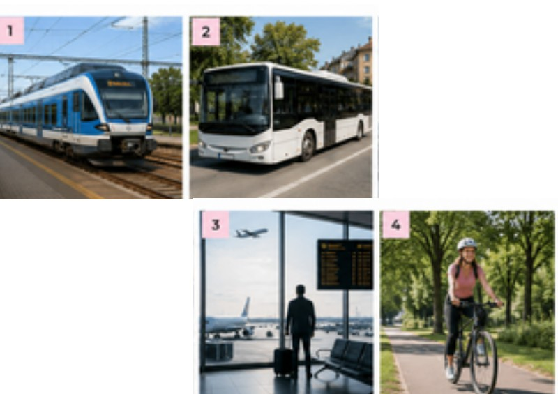

Tento materiál je jen pro naši skupinu. Zadejte prosím heslo, které jste dostali na Telegramu.
Nesprávné heslo, zkuste to znovu.
✦ Modelový test 3
CCE A2 — zkouška nanečisto
Čtení a Poslech si hned zkontrolujete tady — stačí vybrat odpověď a kliknout na „Zkontrolovat". Psaní a Mluvení jsou zadání ke zpracování, ta si spolu projdeme na lekci.
📖 Čtení
✦ ČTENÍ, ÚLOHA Č. 1 — ZMĚNA TRAMVAJOVÉ DOPRAVY
Přečtěte si text a rozhodněte, jestli tvrzení 1–6 jsou pravda (ANO), nebo nepravda (NE).
🚊 Oprava tramvajové tratě
Od 12. do 18. srpna bude probíhat oprava tramvajové tratě mezi zastávkami Karlovo náměstí a I. P. Pavlova.
Tramvaje číslo 10 a 16 budou v této době jezdit po jiné trase. Mezi Karlovým náměstím a I. P. Pavlova bude místo nich jezdit náhradní autobus X10.
Autobus X10 bude jezdit každý den od 5:00 do 23:30. Přes den pojede každých 8 minut, po 21. hodině každých 15 minut.
Cestující nepotřebují žádnou speciální jízdenku. V autobusu X10 platí stejné jízdenky jako v tramvajích.
Oprava měla původně skončit 16. srpna, ale práce budou trvat o dva dny déle. Aktuální informace najdete na webu dopravního podniku a v aplikaci PID Lítačka.
1.Oprava skončí později, než bylo původně plánováno.
✗ Správně: ANO — měla skončit 16. srpna, ale potrvá o dva dny déle.
2.Tramvaj číslo 16 nebude během opravy jezdit vůbec.
✗ Správně: NE — tramvaj č. 16 jezdí dál, jen po jiné trase.
3.Náhradní autobus pojede večer méně často než přes den.
✗ Správně: ANO — přes den jezdí každých 8 minut, po 21. hodině jen každých 15 minut.
4.Autobus X10 mohou cestující použít pouze s novou jízdenkou.
✗ Správně: NE — platí stejné jízdenky jako v tramvajích, žádná speciální jízdenka není potřeba.
5.Náhradní autobus bude jezdit také po 23. hodině.
✗ Správně: ANO — autobus jezdí až do 23:30, tedy i po 23. hodině.
6.Informace o dopravě jsou dostupné také v telefonu.
✗ Správně: ANO — aktuální informace jsou i v aplikaci PID Lítačka, kterou lze mít v telefonu.
✦ ČTENÍ, ÚLOHA Č. 2 — NABÍDKY
Přečtěte si nabídky A–D a úkoly 7–12. Vyberte jednu správnou odpověď.
ACykloservis SpeedBikeOpravujeme jízdní kola všech značek. Otevřeno pondělí–pátek 8:00–18:00, v sobotu pouze dopoledne. Při první návštěvě Vám kolo zdarma zkontrolujeme. Za případnou opravu už ale platíte. Pokud oprava trvá déle než dva dny, můžete si u nás půjčit náhradní kolo.
BTravelBusKaždý víkend pořádáme jednodenní výlety do Rakouska. Odjezd je v sobotu v 6:30 a návrat kolem 22:00. V ceně je doprava a služby průvodce. Oběd si cestující platí sami. Děti do 12 let mají dopravu o 20 % levnější.
CKurýrní služba ExpresHledáme řidiče dodávky. Pracuje se od pondělí do pátku, většinou od 7:00 do 15:30. Řidičský průkaz skupiny B je nutný. Vlastní auto nepotřebujete – během práce používáte služební dodávku.
DLiftGoObjednejte si jízdu jednoduše přes mobilní aplikaci. Jezdíme ve většině velkých měst v České republice. Noví zákazníci dostanou na první cestu slevu 50 %. Pokud cestu zrušíte nejpozději deset minut před příjezdem auta, nic neplatíte.
7.Kde nemusíte mít vlastní dopravní prostředek, ale musíte umět řídit?
✗ Správně: C — u kurýrní služby používáte služební dodávku, ale potřebujete řidičský průkaz skupiny B.
8.Kde dostanete jednu službu zdarma, ale za další už můžete platit?
✗ Správně: A — kontrola kola je zdarma, ale samotná oprava se už platí.
9.Kde můžete cestovat levněji pouze za určité podmínky?
✗ Správně: B — sleva 20 % na dopravu platí jen pro děti do 12 let.
10.Kde se během jednoho dne dostanete do jiné země a zpět?
✗ Správně: B — TravelBus nabízí jednodenní výlety do Rakouska, odjezd ráno a návrat večer.
11.Kde můžete někdy získat službu zdarma, když změníte svůj plán včas?
✗ Správně: D — pokud u LiftGo zrušíte cestu alespoň 10 minut předem, nic neplatíte.
12.Kde můžete dočasně dostat jiný dopravní prostředek, když svůj nemůžete používat?
✗ Správně: A — pokud oprava kola trvá déle než dva dny, cykloservis půjčí náhradní kolo.
✦ ČTENÍ, ÚLOHA Č. 3 — PETR DOJÍŽDÍ DO PRÁCE
Přečtěte si e-mail a úkoly 13–17. U každého úkolu vyberte jednu správnou odpověď A–C.
✉️ Nová zpráva
Komu: Tomáš · Předmět: Práce v Brně
Ahoj Tomáši, už skoro dva měsíce pracuju v Brně. Původně jsem chtěl jezdit do práce autem, protože jsem si myslel, že to bude rychlejší. Nakonec ale každý pracovní den jezdím vlakem. Autem bych musel ráno dlouho stát v koloně a navíc je parkování u firmy drahé.
Cesta vlakem trvá asi čtyřicet minut. Ráno většinou poslouchám hudbu, ale cestou domů často pracuju na počítači.
Minulý týden měl můj vlak dvakrát zpoždění kvůli opravě tratě. V úterý jsem proto přišel do práce skoro o půl hodiny později. Ve čtvrtek měl vlak také zpoždění, ale vyjel jsem z domu dřív, takže jsem do práce dorazil včas.
Teď si kupuju jednotlivé jízdenky. Od příštího měsíce ale budu jezdit ještě častěji, protože budu dvakrát týdně navštěvovat večerní kurz v Brně. Proto jsem si spočítal, že roční jízdenka pro mě bude levnější.
Měj se, Petr
13.Proč Petr nakonec nejezdí do práce autem?
✗ Správně: B — myslel si, že auto bude rychlejší, ale musel by stát v koloně a parkování je drahé.
14.Co Petr obvykle dělá při cestě z práce?
✗ Správně: C — hudbu poslouchá ráno, cestou domů pracuje na počítači.
15.Co se stalo ve čtvrtek?
✗ Správně: B — vlak měl zpoždění, ale protože Petr vyjel dřív, dorazil do práce včas.
16.Proč bude Petr od příštího měsíce cestovat častěji?
✗ Správně: B — bude dvakrát týdně navštěvovat večerní kurz v Brně.
17.Proč si Petr chce koupit roční jízdenku?
✗ Správně: A — protože bude jezdit častěji, vyjde mu roční jízdenka levněji.
✦ ČTENÍ, ÚLOHA Č. 4 — KRÁTKÉ ZPRÁVY
Přečtěte si dva texty a úkoly 18–20. U každého úkolu vyberte jednu správnou odpověď A–C.
✈️ Informace na letišti
Kvůli silnému větru jsou dnes dopoledne všechny lety do Amsterdamu zrušeny.
Odpolední let v 17:40 zatím zrušený není, ale může mít zpoždění. Cestující mají před cestou na letiště zkontrolovat aktuální informace.
Cestující ze zrušených letů se mohou obrátit na informační přepážku nebo přímo na svou leteckou společnost.
🚌 SMS
Ahoj, náš autobus do Českých Budějovic měl původně odjíždět v 7:45, ale dopravce změnil čas na 7:15.
Já budu na nádraží už v 6:50, protože si ještě potřebuju koupit něco k jídlu. Tobě stačí přijít nejpozději v 7:00. Martin
18.Které tvrzení o letech do Amsterdamu je správné?
✗ Správně: B — zrušeny jsou jen dopolední lety, odpolední let v 17:40 zatím zrušený není.
19.Co mají cestující udělat ještě před cestou na letiště?
✗ Správně: C — cestující mají před cestou zkontrolovat aktuální informace.
20.Proč chce Martin přijít na nádraží dříve než příjemce zprávy?
✗ Správně: A — chce si ještě koupit něco k jídlu, proto přijde dřív.
🎧 Poslech
✦ POSLECH, ÚLOHA Č. 1
Přečtěte si úkoly 1–7. Potom uslyšíte rozhovor. Rozhodněte, jestli jsou tvrzení ANO, nebo NE. Nahrávku uslyšíte 2×.
🔊 Nahrávka 1
1.Martin volá na vlakové nádraží.
✗ Správně: ANO.
2.Vlak do Brna má zpoždění.
✗ Správně: ANO.
3.Vlak odjíždí z nástupiště číslo 5.
✗ Správně: NE.
4.Martin jede sám.
✗ Správně: NE.
5.Sleva platí jen pro děti.
✗ Správně: NE.
6.Jízdenku lze koupit online.
✗ Správně: ANO.
7.Martin přijede do Brna před polednem.
✗ Správně: ANO.
✦ POSLECH, ÚLOHA Č. 2
Uslyšíte 5 krátkých textů. Ke každému textu napište jednu krátkou odpověď. Nahrávku uslyšíte 2×.
🔊 Nahrávka 2
8.V kolik hodin odjíždí autobus?
✗ Správná odpověď: 7:20.
9.Kam jede žena na dovolenou?
✗ Správná odpověď: do Řecka.
10.Jak často muž jezdí do práce na kole?
✗ Správná odpověď: třikrát týdně.
11.Kde si mohou cestující koupit jízdenku?
✗ Správná odpověď: v automatu.
12.Jakým dopravním prostředkem jede rodina do zoo?
✗ Správná odpověď: autobusem.
Malé rozdíly v zápisu (velká/malá písmena, „3×" místo „třikrát") jsou v pořádku — kontrola je na to nastavená.
✦ POSLECH, ÚLOHA Č. 3
Uslyšíte 4 krátké rozhovory. U každého úkolu vyberte jednu správnou odpověď A–C. Nahrávku uslyšíte 2×.
🔊 Nahrávka 3
13.Kam chce muž jet?
✗ Správně: C.
14.Proč žena nepůjde pěšky?
✗ Správně: A.
15.V kolik hodin odjíždí metro?
✗ Správně: B.
16.Jak muž nejčastěji cestuje do práce?
✗ Správně: C.
✦ POSLECH, ÚLOHA Č. 4
Uslyšíte 4 krátké rozhovory. Ke každému rozhovoru 17–20 přiřaďte správné téma A–F. Dvě témata jsou navíc. Nahrávku uslyšíte 2×.
🔊 Nahrávka 4
Témata: A – vlak B – autobus C – letiště D – taxík E – kolo F – metro
17.Rozhovor 1
✗ Správně: A (vlak).
18.Rozhovor 2
✗ Správně: C (letiště).
19.Rozhovor 3
✗ Správně: D (taxík).
20.Rozhovor 4
✗ Správně: F (metro).
✍️ Psaní
✦ ZADÁNÍ K VYPRACOVÁNÍ
Tuhle část neopravuje stránka automaticky — napište text na papír nebo do wordu a probereme ho spolu na lekci.
✉️ Úloha 1 (min. 40 slov)
Napište e-mail tetě. Pozvala vás na návštěvu na Lipno.
poděkovat a zeptat se na detaily
co si máte vzít s sebou
jaký program plánuje
min. 40 slov
📓 Úloha 2 (min. 60 slov)
Napište zápis do deníku. Minulý týden jste navštívil/a novou zemi.
kterou zemi jste navštívil/a
s kým jste tam byl/a
co jste dělal/a
co se Vám tam líbilo nebo nelíbilo
min. 60 slov
🗣️ Mluvení
✦ ÚLOHA Č. 1
Ústní část si projdeme spolu na lekci — tady jsou jen otázky, ať se na ně stihnete podívat předem.
Jak nejčastěji jezdíte do práce nebo do školy?
Jaký dopravní prostředek máte nejradši a proč?
Jak často cestujete vlakem?
Kam jste jel/a naposledy na výlet?
Co děláte během dlouhé cesty?
Jaké dopravní prostředky jsou ve Vašem městě?
✦ ÚLOHA Č. 2
Podívejte se na obrázky, popište 2 z nich a odpovězte na otázky.

Který obrázek se Vám nejvíce líbí a proč?
Kterým dopravním prostředkem cestujete nejčastěji?
Jaké jsou výhody cestování vlakem?
Chtěl/a byste více jezdit na kole? Proč?
Jak často létáte letadlem?
✦ ÚLOHA Č. 3 — DIALOG, ZTRACENÝ KUFR
Jste na letišti. Po příletu nemůžete najít svůj kufr. Musíte se zeptat na 5 informací.